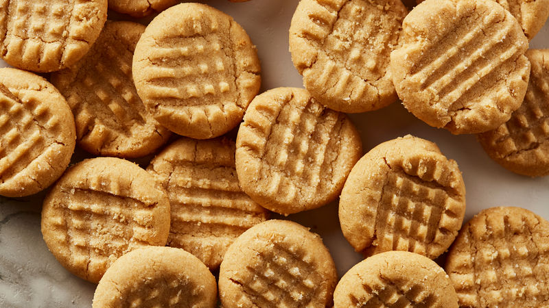

Peanut Butter Cookies

Description
A doughnut or donut is a type of leavened fried dough. It is popular in many countries and is prepared in various forms as a sweet snack that can be homemade or purchased in bakeries, supermarkets, food stalls, and franchised specialty vendors.
Ingredients
- 1 cup unsalted butter
- 1 cup crunchy peanut butter
- 1 cup white sugar
- 1 cup packed brown sugar
- 2 large eggs eggs
- 2 ½ cups all-purpose flour
- 1 teaspoon baking powder
- ½ teaspoon salt
- 1 ½ teaspoons baking soda
Steps
- Cream butter, peanut butter, and sugars together in a bowl; beat in eggs.
- In a separate bowl, sift flour, baking powder, baking soda, and salt; stir into butter mixture. Put dough in refrigerator for 1 hour.
- Roll dough into 1 inch balls and put on baking sheets. Flatten each ball with a fork, making a crisscross pattern. Bake in a preheated 375 degrees F oven for about 10 minutes or until cookies begin to brown.